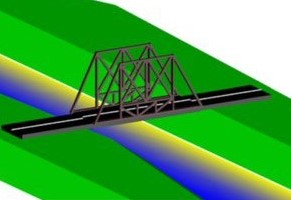

I’m Andoh Emmanuel, a dedicated civil and environmental engineer who enjoys bringing creative ideas to life. Throughout my journey, I've developed a passion for designing and building infrastructure, working on projects like prototypes for steel bridges, stadiums, and recycling facilities.
I’m skilled in 3D modeling, welding, and using design software like AutoCAD. I’ve also taken part in hands-on engineering workshops, mentored younger students, and presented at STEM fairs. These experiences have fueled my curiosity and commitment to solving real-world problems, especially in sustainable infrastructure.
I’m always looking to learn, improve, and take on new challenges. Through my portfolio, I aim to showcase the projects I’ve worked on and the innovative designs I've created. I hope to inspire others and connect with fellow enthusiasts in the engineering field.
Projects
Steel Bridge Prototype
For my steel bridge project, I constructed a detailed prototype using steel, focusing on demonstrating the structural integrity and design elements essential for real-world application. Before building the model, I created 3D designs, including front view, plan, and side view illustrations, to visualize the bridge's layout and optimize the design for strength and durability. The prototype featured essential components such as trusses, supports, and joints, showcasing my understanding of load distribution and engineering principles. This project not only allowed me to apply practical welding skills but also deepened my appreciation for the intricate balance between aesthetics and functionality in civil engineering..
3D Model-Steel Bridge Prototype
For the 3D views of my steel bridge model, I used software to create realistic front, plan, and side perspectives that showcased the bridge’s structural details from different angles. These 3D designs helped visualize how the various components fit together, including the trusses, beams, and support columns. The models allowed me to experiment with different design elements, ensuring that the bridge would be both visually appealing and structurally sound. The 3D views were crucial for refining the layout before moving on to the physical steel prototype, providing a clear guide for the construction process..
Top view
Top view.
Side View view

Side view.
Stadium project
For my stadium project, I created a prototype model that focused on the fundamental design elements of a sports facility. The model included seating arrangements, with tiered seating sections to represent different viewing levels, a central playing field, and basic entry and exit points for crowd management. I also incorporated elements like surrounding pathways for accessibility and designated areas for vendors. The project allowed me to explore structural design principles and the considerations needed for safety, comfort, and crowd control in large venues. Working on the stadium model deepened my understanding of infrastructure design and event space planning..
Recycle Facility Project
For my recycling facility project, I built a student prototype that showcased the essential components of a functional recycling center. The model included key areas like the receiving area, where waste materials are brought in, and the sorting area, where different types of recyclables—such as plastics, metals, and paper—are separated. It also featured storage sections for processed materials and a small-scale baler unit to simulate compacting recyclables for transport. The hands-on process of designing and assembling the prototype helped me understand the workflow of recycling operations and highlighted the importance of sustainable waste management in infrastructure planning..
Interchange Project
For my interchange project, I built a physical prototype using paper boards to represent the design. The model demonstrated the layout of ramps, lanes, and pedestrian walkways, aiming to improve traffic flow and safety. I carefully arranged each element to replicate a functional interchange, paying attention to details like vehicle paths and turning radii. The process involved cutting and shaping the paper boards to show different levels and connections, simulating the complex nature of real-life roadways. This hands-on approach helped me better understand the intricacies of transportation design and fostered my enthusiasm for civil engineering.
Internships
During my internship at the Department of Feeder Roads, I gained practical experience in road construction and maintenance projects. I was involved in site inspections, conducting compaction tests, and performing various field tests to ensure quality standards. I also worked closely with survey engineers, using equipment for road surveying and learning to interpret topographic maps. This experience gave me valuable insights into the planning and execution of road projects, further enhancing my skills in project management and civil engineering.
Kilon Building & Design Company
For my internship at Kilon Building & Design Company, I had the opportunity to put my engineering knowledge into practice. The experience involved site supervision, AutoCAD drawing, and working with tools like ETABS and Revit. I also interacted with a variety of professionals, including consultants and painterpreneurs, gaining insights into different aspects of the construction industry. This hands-on experience allowed me to apply my technical skills while learning from experts in the field, further deepening my understanding of engineering practices and project management..
Graduate Guidance Group
In March 2024, I volunteered at the Ghana School's Structure Building Competition, organized by the Graduate Guidance Group under the University of Nottingham. High school students built vertical structures using wood and glue to develop creativity, teamwork, and problem-solving skills. Assigned as a guide to Aburi Girls Senior High School, I applied my engineering skills from school projects to help the students manage resources and select suitable designs. I also performed structural analysis to ensure durability. The experience allowed me to apply classroom concepts, inspire students interested in engineering, and network with university representatives.